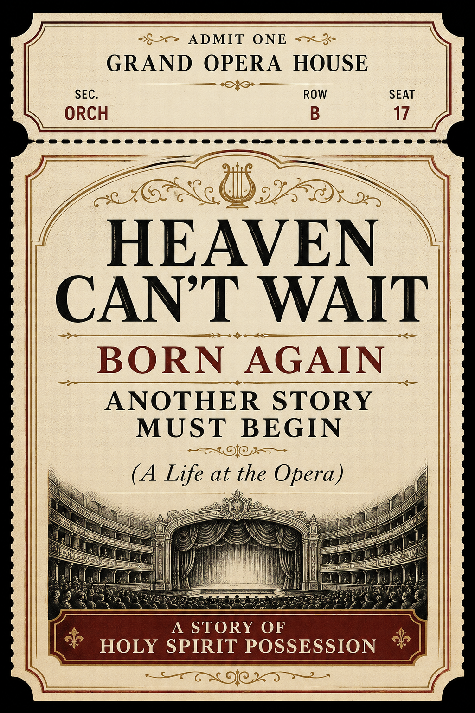

Zion Coalition Thought Piece
God May Do This Again
Well, there's a young man in a t-shirt Listenin' to a rock 'n' roll station He's got a greasy hair, greasy smile He says, "Lord, this must be my destination" 'Cause they told me, when I was younger Sayin' "Boy, you're gon' be president" But just like everything else, those old crazy dreams Just kinda came and went
“our lives passed away like as it were unto us a dream, a lonesome and a solemn people, wanderers” (Jacob 7:26)
Dream Bigly
I think Jesus sometimes lets us keep our big dreams for a while.
There is something almost childlike about it—something like the innocence we have as children and even as tweens, before life becomes more complicated and ambiguous. There can be a little sadness when that innocence disappears. We begin qualifying everything. We learn how unlikely things are. We become reasonable.
But I truly believe Jesus sometimes delights in letting His children dream bigly before all those qualifications arrive.
This book I'm writing—I have this feeling it's going to be huge. Maybe Harry Potter huge.
This movie I'm making—I can almost see the theater filled with people watching it.
This song I'm writing—maybe thousands of people will someday sing it.
This invention I'm working on—I keep thinking somebody is going to look at it someday and say, “Why didn't anyone think of this before?”
This little thing I'm building—maybe it will eventually change something much bigger than me.
This business I'm starting—I can already imagine it growing into something people everywhere know about.
This idea I have—I honestly think it might change the way people think about this.
This organization we're starting—maybe someday there will be chapters of it all over the world.
This cause I care about—sometimes I imagine it catching fire until millions of people care about it too.
This little ministry I'm beginning—I can imagine it eventually reaching thousands of people.
This little piece of land I'm working on—I can almost see what it could become someday: a beautiful place filled with people.
This kid of mine—I look at her and sometimes think, “She could grow up and do something extraordinary.”
This crazy project I've been working on in my spare time—I have this strange feeling it might turn out to be the thing I was supposed to do with my life.
This dream Jesus put in my heart—it seems ridiculously bigger than me, but sometimes I can almost see it actually happening.
Maybe sometimes those dreams come true exactly as imagined. Maybe sometimes they come true differently. And maybe sometimes the enormous dream was never a prediction at all. Maybe it was simply a beautiful place Jesus allowed us to live for a while—a place where hope, imagination, faith and possibility could grow before experience taught us to see things with more complexity.
I think something like that may have happened to me with my redeemed rock songs.
An Old Precedent
There is an interesting precedent in the early Latter-day Saint tradition. William W. Phelps took existing melodies—folk tunes and other familiar music—and gave them new words and new religious meaning. Some of those songs were sung by the early Saints, and some eventually became part of the continuing musical tradition of the Church. Others did not.
I find something suggestive in that.
God can take something that already exists in the culture and use it again for another purpose. A melody may have meant one thing to the person who originally wrote or sang it, and then, in another setting, that same melody can become the vehicle for an entirely different message.
For those who have eyes to see, perhaps God still does this.
The Songs I Thought Were for Zion
Based partly on that precedent, and partly on impressions I believe I have received from the Spirit, I am beginning to wonder whether what has been happening to me with rock songs is not primarily about creating a new collection of songs that everyone will someday sing in Zion.
For a while, that is how I imagined it. Jesus was “redeeming” these songs for me—changing words, redirecting meanings, turning familiar rock songs toward Him—and I wondered whether these might actually become songs sung by others in Zion.
The possibility remains that some of these songs could someday find their way—perhaps with a little revision—into an actual Zion songbook. But I am beginning to doubt that this is their primary purpose. Instead, I sometimes imagine a museum in Zion where these redeemed songs from the 2020s are preserved, not primarily because everyone is supposed to sing them, but because they illustrate the principle I am describing: Here was a guy who initially thought God was giving him songs for the masses, only to discover that perhaps God was showing through him something He is willing to do personally for anyone who seeks.
A More Personal Possibility
Maybe the principle is much broader, much more decentralized, and much more personal.
Maybe God is no respecter of persons in this either.
Maybe He can pour out His Spirit upon His children and speak to them through the music already embedded in their lives. Maybe one person hears a Billy Joel song and suddenly certain words carry a message meant especially for him. Someone else hears Tom Petty, Billy Idol, Aerosmith, or some entirely different artist, and an impression comes: change that word; hear that line differently; listen to what this reminds you of.
And perhaps, for some people, the words themselves begin to change in their minds. The old song becomes something new—not necessarily a hymn for everybody, but something like a personal hymn, a message shaped to the individual who needs to hear it.
If that is true, then what I am doing is not necessarily assembling the songs of Zion.
Seek, and Ye Shall Find
Seek, and ye shall find.
Perhaps that applies even here. Seek Jesus in the music and perhaps, sometimes, you will find Him there. Seek what the Spirit might say through the songs already stored inside you, and perhaps the Spirit will “wrought upon” them too.
Do I know that this is what God is doing?
No.
I believe it. And, as with nearly every belief I have, there is unbelief mixed in with it. I could be misunderstanding what is happening. I could be seeing the pattern too broadly.
But for now, this is what I believe.
And I am going to go with it.
Postlude
Across centuries, subcultures, and scriptures, the chorus remains remarkably unchanged: the sting of the gap between the promised horizon and the quiet, everyday reality.
The Anatomy of the Quiet Dream
- The Promised Ideal: Thoreau’s famous framing of "quiet desperation," Springsteen's "Factory" lines you quoted, and the prophecy of “Boy, you're gon' be president” all sell the myth of eventual grandeur. Youth is built on the assumption that life is a straight line toward a monumental destination.
- The Existential Drift: Jacob’s ancient reflection in the Book of Mormon captures the temporal slip—life passing away "as it were unto us a dream." It isn't necessarily a tragedy of grand ruin, but of subtle, solemn wandering where time moves faster than purpose.
- The Everyday Sanctuary: The young man with greasy hair listening to the rock 'n' roll station finds a momentary, gritty grace. When the grand dreams "came and went," the human condition adapts. The radio becomes the cathedral; the greasy smile becomes the quiet defiance against the noise of unfulfilled expectations.
We trade the myth of universal presidency for the reality of a late-night rock station—learning that surviving the drift, and finding a small beat to dance to within it, might be the real destination after all.